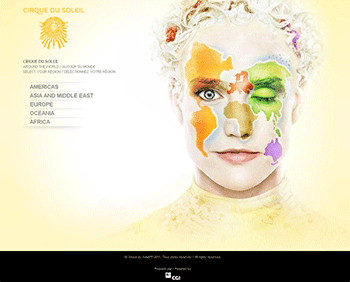
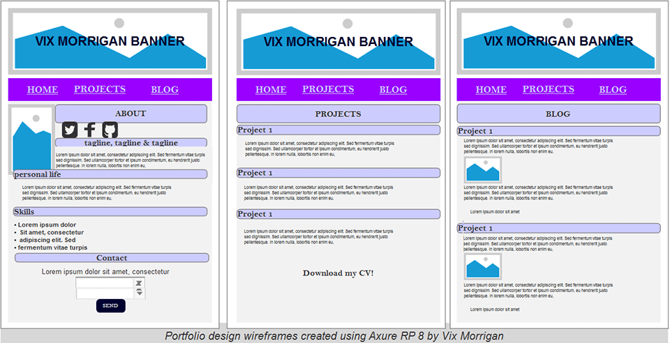
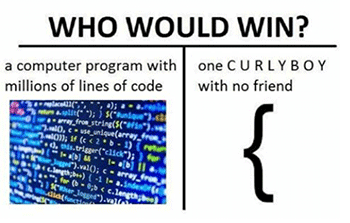

♠ Building my Portfolio ♠
Inspiration
After toying with a few ideas of how I wanted my site to look, I decided to seek some real inspiration. I searched for portfolio ideas on Google, and I came across Creative Bloq’s 50 brilliant design portfolios to inspire you. I was keen to discover how web designers expressed both their professional skills and individuality simultaneously, and what kind of personal avatar images they decided on. I wanted my portfolio to have a personal touch; inspired by some of my own preferences and hobbies. I wanted to convey my individuality alongside my skills, as similar to many other users globally; I like be reminded that there is a real human being behind all that technology!

The Design
I designed my portfolio to be responsive, as I came to understand through my research (and with the help of this article), that most users spend a high percentage of their time browsing on mobile devices. In 2014, mobile device usage actually overtook desktop usage, and the rise has shown no signs of slowing yet. I converted my paper sketches into wireframes using Axure RP 8.
{kind=link}

I found Axure easy to work with, as the elements available are varied and easy to manipulate; meaning my time was spent more efficiently. Once I created the wireframes, I had to choose the typography and colours. I initially wanted to use an 8-bit inspired font face; however it didn’t look as nice as I’d hoped, so I explored the catalogue Google Fonts offer and after exploring a few (hundred) font combinations; I settled on Delius for the main font, and Barrio for the headings. I knew I wanted to use Google fonts, as they offer cross-platform compatibility and have a broad range of typefaces available.
In terms of colour scheme; I was certain I wanted to incorporate purple throughout my portfolio site, as alongside being my favourite colour; it symbolises ambition, independence, creativity and wisdom (among other things). I incorporated my chosen colour scheme into my banner and logo design (discussed in a previous blog) so my site would flow and appear the same throughout the content. To help me visualise my colour scheme; I developed Moodboards that I created using Easel.Ly. I have used this website a few times throughout my course and for my job as a social media marketer. It is completely free, you can upload and use your own images (if required) and you can save your creations online; allowing easy, remote access.
The Structure
I used an open source editor that is free to download (Brackets) to structure my site, using HTML5 and later adding CSS. I enjoy working with Brackets as you can change the theme of the program to black (which saves my eyes!), and I feel comfortable using it. I’ve used it throughout my course and it’s not let me down yet and I really appreciate the live preview function it offers – very handy when it comes to the styling phase!
I focused on the structure and layout of my portfolio site and its content using HTML5 only at first, ensuring to consistently run my code through the W3C Validator. Once happy with my structure, I was able to focus on the styling of my site. Even though I already knew the hex codes of the colours I’d be using, I still spent a lot of time ensuring they worked well together and were applied in the right place. I used styling techniques, such as float-image and padding to ensure the content displayed how I wanted, on both desktop and mobile devices.
Creating my portfolio has taught me a lot about web development; not only through the research I conducted, but also through the errors I encountered. I’d be lying to you if I said coding my CSS was all fun and games, not only was it a case of inner perfectionist versus trial and error; it also taught me that sometimes, you have no option but to remain light hearted...

References
Creative Bloq Staff. (2017). 50 brilliant design portfolios to inspire you. Available: http://www.creativebloq.com/portfolios/examples-712368/2. [Last accessed 3rd Nov 2017].
Wilson, Brant. (2012). Websites With That Personal Touch. Available: https://inspiredology.com/websites-with-that-personal-touch/. [Last accessed 24th Oct 2017].
Marcotte, Ethan. (2010). Responsive Web Design. Available: https://alistapart.com/article/responsive-web-design. [Last accessed 20th Oct 2017].
Chaffey, Dave. (2017). Mobile Marketing statistics compilation. Available: https://www.smartinsights.com/mobile-marketing/mobile-marketing-analytics/mobile-marketing-statistics/. [Last accessed 19th Oct 2017].